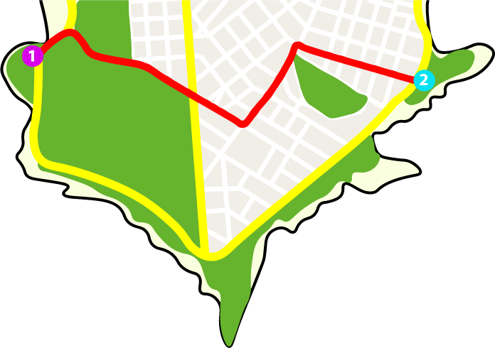

Recorrido sin bicisenda
Tramo
Club de los Pescadores - Plaza Daniel Muñoz
• Rambla Wilson
• Av. Julio María Sosa
• Solano Garcia
• José Ellauri
• 21 de septiembre
• Tiempo estimado: 11 minutos •
Riesgo de accidentes: ALTÍSIMO